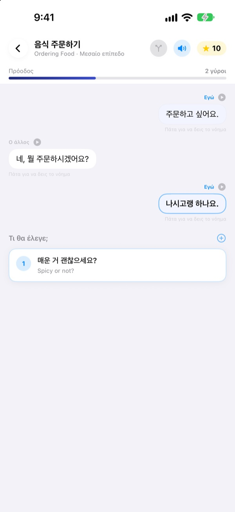
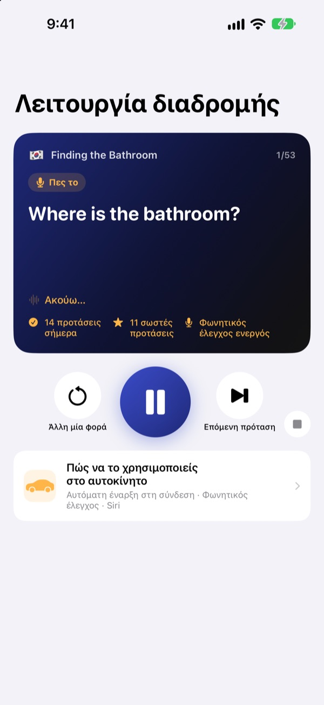
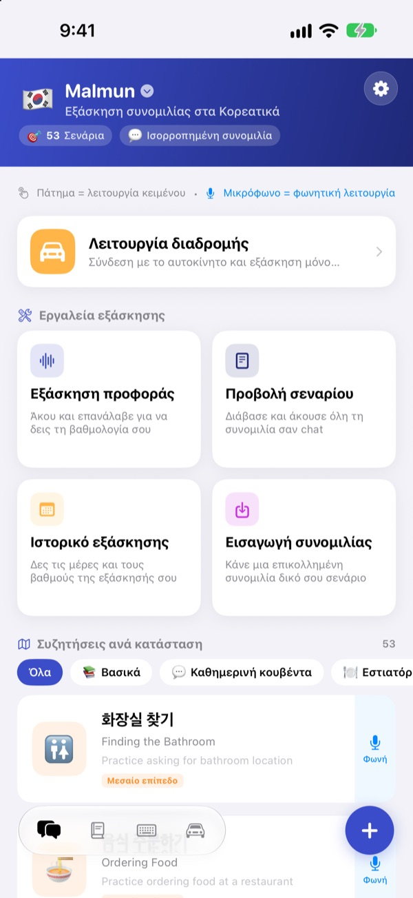
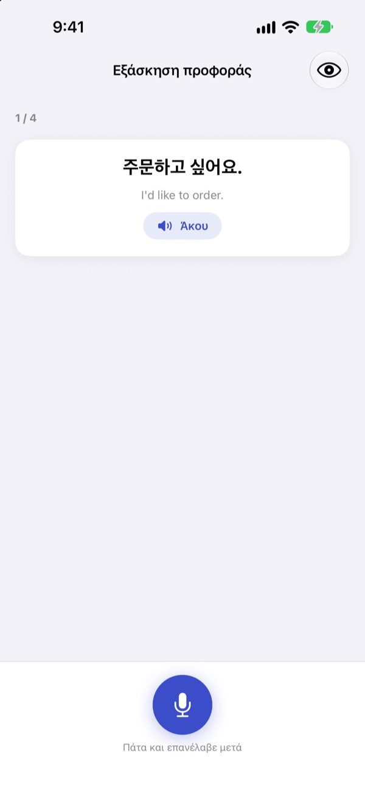

Τέλος στο κόλλημα.
Μίλα πρώτος.
Το Malmun είναι ένας προπονητής συζήτησης όπου κάθε απάντηση που διαλέγεις στέλνει τον διάλογο αλλού. Μάθε κορεατικά, ιαπωνικά, κινεζικά, ισπανικά ή ινδονησιακά και στο αυτοκίνητο κάνε εξάσκηση μόνο με τα αυτιά και τη φωνή σου.
Διάλογοι με διακλαδώσεις, εξάσκηση προφοράς και λεξιλόγιο είναι δωρεάν.

Συνέχισε εσύ τη συζήτηση
Αυτό είναι το «Καλημέρα», ένας ινδονησιακός διάλογος όπως ακριβώς υπάρχει στην εφαρμογή. Κάθε φράση που διαλέγεις στρίβει τη συζήτηση αλλού.
Ήξερες τη φράση, αλλά όχι την απάντηση;
Στο βιβλίο οι διάλογοι πάνε πάντα κατά το σενάριο. Στην πραγματικότητα ο άλλος απαντά κάτι που δεν περίμενες. Το Malmun σε βάζει να περπατήσεις από πριν όλες τις διακλαδώσεις μιας συζήτησης, ώστε η επόμενη φράση να είναι έτοιμη ό,τι κι αν έρθει. Ακόμη και ο δρόμος για το σπίτι γίνεται χρόνος εξάσκησης.
Εξάσκηση με το αυτί ενώ οδηγείς
Η Λειτουργία διαδρομής παίζει από τα ηχεία του αυτοκινήτου μέσω Bluetooth ή CarPlay. Πρώτα ακούς τη σημασία, ένας ήχος σού δίνει χρόνο να το πεις, και μετά η απάντηση ακούγεται μία φορά αργά και μία σε κανονική ταχύτητα.
Προχώρα και ξανάκουσε με τα κουμπιά του τιμονιού ή πες next, again ή slower όταν είναι η σειρά σου. Κάνει παύση όταν μιλά η πλοήγηση.

Όλες οι καταστάσεις του ταξιδιού και της καθημερινότητας
Κάθε γλώσσα έχει 53 διαλόγους ανά κατάσταση: βασικά, καθημερινή κουβέντα, εστιατόριο, μετακινήσεις, αεροδρόμιο, ξενοδοχείο, ψώνια, αξιοθέατα και επείγοντα.
Αν μαθαίνεις ινδονησιακά, υπάρχουν κι άλλα: 5 χειροποίητα σενάρια κουβέντας, 3 μαθήματα ημέρας με 6 σκηνές το καθένα και εβδομαδιαίο πρόγραμμα, και 100 λέξεις για επαγγελματικό ταξίδι.

Δες αν το είπες σωστά
Η εξάσκηση προφοράς σού δίνει βαθμό και χρωματίζει τις λέξεις που πέτυχες και όσες σου ξέφυγαν.
Στην προβολή σεναρίου βλέπεις όλο τον διάλογο σαν συνομιλία. Άκουσέ τον μονορούφι ή κρύψε τις σημασίες και δοκίμασε τον εαυτό σου.

Ξεκινάς σε τρία βήματα
- 1
Διάλεξε γλώσσα
Πάτησε τη σημαία στην κορυφή της αρχικής οθόνης. Φράσεις και λέξεις αποθηκεύονται χωριστά για κάθε γλώσσα.
- 2
Άνοιξε έναν διάλογο
Πάτα απαντήσεις στη λειτουργία κειμένου ή πάτα το μικρόφωνο και μίλα: η φωνητική λειτουργία βρίσκει την πιο κοντινή απάντηση.
- 3
Στο αυτοκίνητο, Λειτουργία διαδρομής
Σύνδεσε το iPhone με το αυτοκίνητο και πάτα αναπαραγωγή. Δεν χρειάζεται να κοιτάς την οθόνη.
Χειρισμός της Λειτουργίας διαδρομής
- Τιμόνι: επόμενο κομμάτι
- Επόμενη φράση
- Τιμόνι: προηγούμενο κομμάτι
- Η ίδια φράση ξανά
- Κουμπί αναπαραγωγής
- Παύση και συνέχεια
next·skip- Επόμενη φράση
again·repeat- Άκουσέ τη ξανά
slower·faster- Αλλαγή ταχύτητας ανάγνωσης
next scene- Στον επόμενο διάλογο
stop·pause- Τέλος εξάσκησης
- Siri: «Έναρξη εξάσκησης διαδρομής στο Malmun»
- Ξεκίνα χωρίς να αγγίξεις το iPhone
Όταν η εφαρμογή είναι στα ελληνικά, οι φωνητικές εντολές λέγονται στα αγγλικά. Ακούγονται μόνο όταν είναι η σειρά σου, μετά τον ήχο. Η τρέχουσα φράση φαίνεται στις πληροφορίες αναπαραγωγής του αυτοκινήτου. Δεν υπάρχει ξεχωριστή οθόνη εφαρμογής στο CarPlay.
Σχεδόν όλα είναι δωρεάν. Το Malmun Pro ξεκλειδώνει τα υπόλοιπα.
Δωρεάν
- Κουβέντα με διακλαδώσεις και μαθήματα ημέρας (ινδονησιακά)
- Διάλογοι ανά κατάσταση: βασικά και καθημερινή κουβέντα
- Λειτουργία διαδρομής, 3 σκηνές τη μέρα
- Προφορά, σενάριο, εισαγωγή διαλόγων, ιστορικό εξάσκησης
- Οι φράσεις μου, κάρτες λεξιλογίου, πληκτρολόγιο φράσεων
- Κοινή χρήση σεναρίων με φίλους, σενάρια με τεχνητή νοημοσύνη
Malmun Pro
- Όλοι οι διάλογοι ανά κατάσταση: εστιατόριο, μετακινήσεις, αεροδρόμιο, ξενοδοχείο, ψώνια, αξιοθέατα, επείγοντα
- Απεριόριστη Λειτουργία διαδρομής
- Ισχύει για όλες τις γλώσσες
Ετήσια συνδρομή ή εφάπαξ αγορά για πάντα
Τις τιμές θα τις βρεις στην εφαρμογή και στο App Store. Η ετήσια συνδρομή ανανεώνεται αυτόματα, εκτός αν ακυρωθεί τουλάχιστον 24 ώρες πριν λήξει η περίοδος.
Συχνές ερωτήσεις
Ποιες γλώσσες μπορώ να μάθω;
Κορεατικά, ιαπωνικά, κινεζικά, ισπανικά και ινδονησιακά. Τα κουμπιά και τα μενού είναι στα ελληνικά, αλλά οι σημασίες των φράσεων και οι φωνητικές εντολές είναι στα αγγλικά. Γι’ αυτό τα αγγλικά δεν εμφανίζονται στη λίστα.
Πώς το χρησιμοποιώ στο αυτοκίνητο;
Σύνδεσε το iPhone με Bluetooth ή CarPlay, άνοιξε τη Λειτουργία διαδρομής και πάτα αναπαραγωγή. Ο ήχος βγαίνει από τα ηχεία και η τρέχουσα φράση φαίνεται στο «Παίζει τώρα». Μπορείς επίσης να πεις στη Siri «Έναρξη εξάσκησης διαδρομής στο Malmun» ή να φτιάξεις μία φορά έναν αυτοματισμό στην εφαρμογή Συντομεύσεις, ώστε να ξεκινά μόλις συνδεθεί το CarPlay (ή το Bluetooth του αυτοκινήτου).
Ακούει το μικρόφωνο συνέχεια;
Όχι. Ακούει μόνο όταν είναι η σειρά σου μετά τον ήχο, από το μικρόφωνο του iPhone, και ό,τι ακούει επεξεργάζεται στη συσκευή.
Η προφορά μου δεν αναγνωρίζεται.
Η αναγνώριση ομιλίας λειτουργεί στη γλώσσα που μαθαίνεις. Δοκίμασε σε πιο ήσυχο μέρος και έλεγξε ότι η αναγνώριση ομιλίας γι’ αυτή τη γλώσσα έχει ληφθεί στη συσκευή.
Πώς προσθέτω το πληκτρολόγιο;
Πήγαινε στις Ρυθμίσεις ▸ Γενικά ▸ Πληκτρολόγιο ▸ Πληκτρολόγια ▸ Προσθήκη νέου πληκτρολογίου και διάλεξε το πληκτρολόγιο Malmun. Όταν γράφεις, πάτα την υδρόγειο για εναλλαγή. Η πλήρης πρόσβαση δεν χρειάζεται. Για λιγότερες φράσεις, πάτα το εικονίδιο πληκτρολογίου κάτω δεξιά στην αρχική οθόνη ▸ Διαχείριση πληκτρολογίου.
Δεν βλέπω σενάριο που μοιράστηκε ένας φίλος.
Η κοινή χρήση γίνεται μέσω iCloud, οπότε πρέπει να είστε και οι δύο συνδεδεμένοι στο iCloud. Αν ακόμη δεν εμφανίζεται, κλείσε τελείως την εφαρμογή και άνοιξέ την ξανά.
Τι χρειάζομαι για να φτιάχνω σενάρια με τεχνητή νοημοσύνη;
Βάλε στην εφαρμογή το δικό σου κλειδί API της Anthropic και γράψε ένα θέμα, και θα δημιουργηθεί νέος διάλογος. Όλα τα άλλα λειτουργούν χωρίς κλειδί.
Πώς ακυρώνω ή παίρνω επιστροφή χρημάτων;
Τις πληρωμές τις χειρίζεται η Apple. Ακύρωση από τις Ρυθμίσεις του iPhone ▸ Λογαριασμός Apple ▸ Συνδρομές ▸ Malmun. Για επιστροφή χρημάτων, κάνε αίτημα στην Apple στο reportaproblem.apple.com.
Άλλαξα iPhone και χάθηκε το Pro.
Συνδέσου με τον ίδιο Λογαριασμό Apple και στο Malmun πάτα Ρυθμίσεις ▸ Malmun Pro ▸ Επαναφορά αγορών.
Πού αποθηκεύεται η πρόοδός μου;
Δεν χρειάζεται λογαριασμός. Τα δεδομένα μένουν στη συσκευή σου και στο δικό σου iCloud. Χωρίς διαφημίσεις και παρακολούθηση, στέλνονται μόνο ανώνυμα στατιστικά χρήσης και αναφορές σφαλμάτων. Σφάλματα και προτάσεις μπορείς να γράψεις και στο GitHub Issues (github.com/M1zz/IndonesianSmallTalk/issues).
Ερωτήσεις ή σχόλια; Γράψε στο leeo@kakao.com, από τις Ρυθμίσεις ▸ Αποστολή σχολίων στην εφαρμογή ή στο Instagram: @lee25_ios.